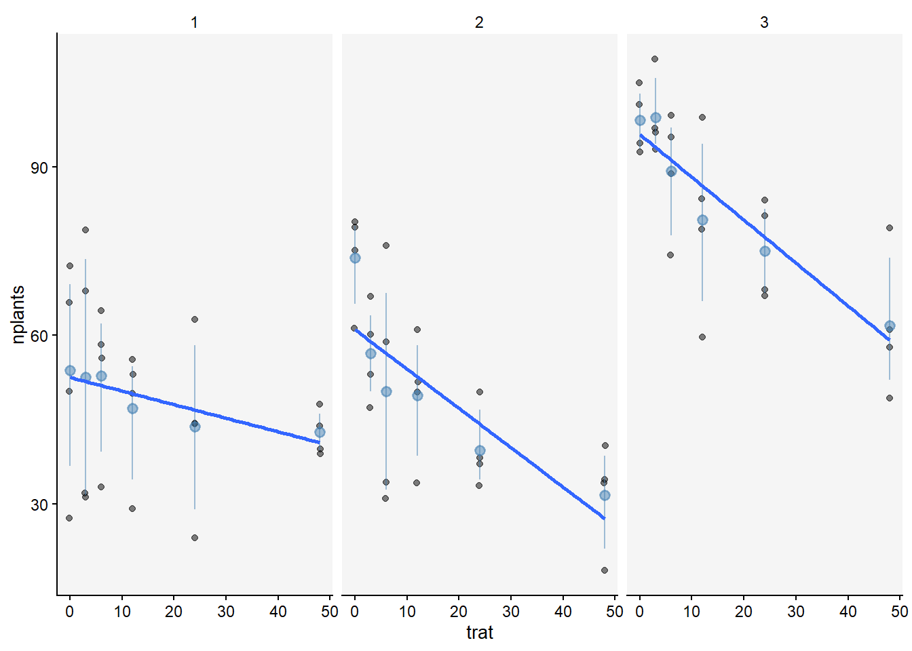
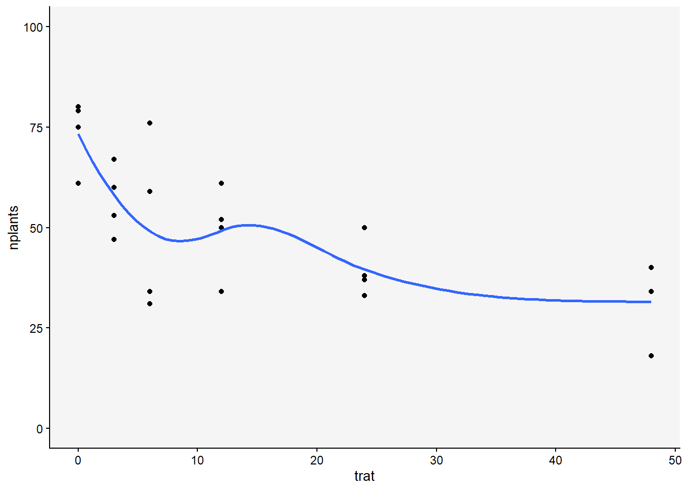
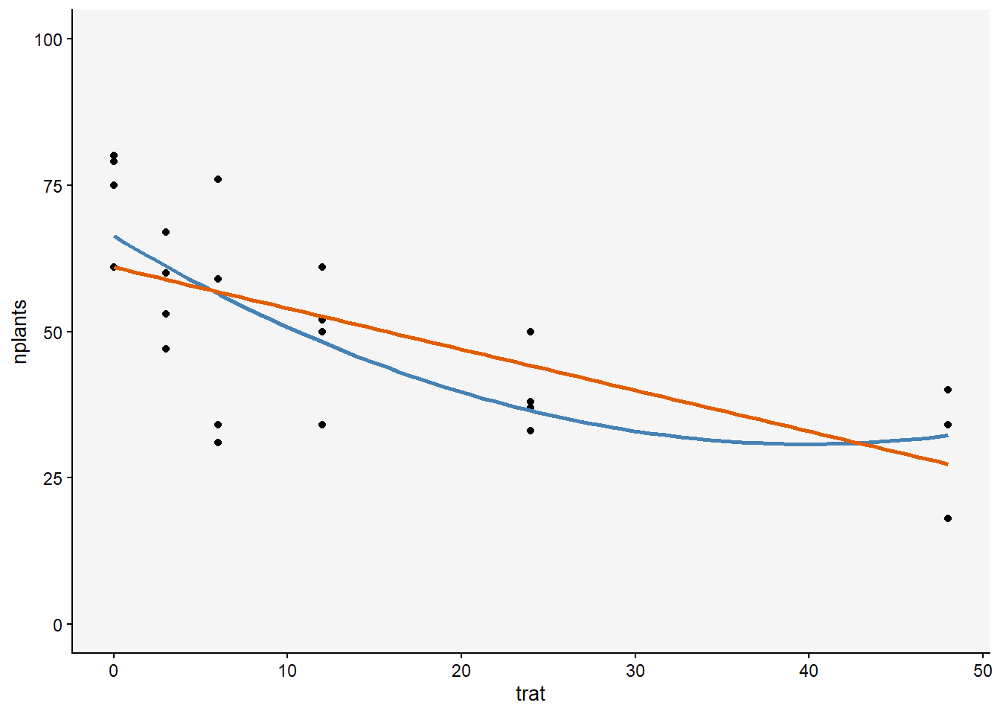
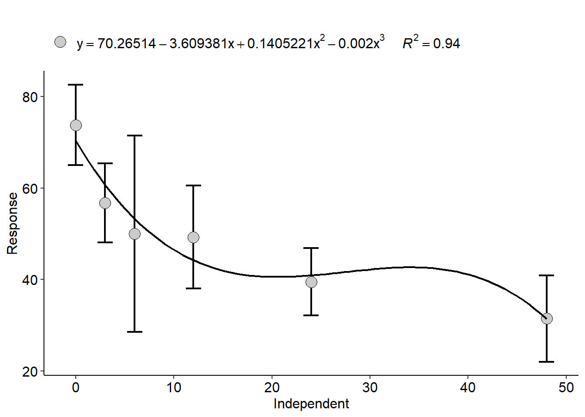
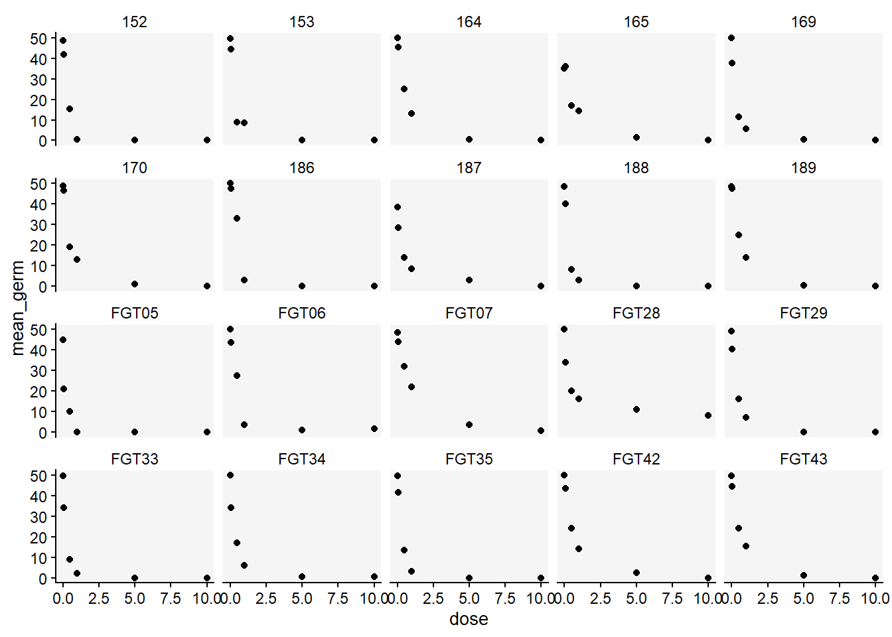

library(tidyverse)
library(r4pde)
library(gsheet)
library(ggthemes)
library(patchwork)
library(lme4)
library(AgroR)
library(drc)
library(ec50estimator)
library(DT)
library(stats)Análise de Regressão
A análise de regressão é adequada quando queremos entender e prever a relação entre uma variável dependente (Y) e uma ou mais variáveis independentes quatitativa (X). Ela envolve a construção de um modelo matemático que descreverá essa relação funcional. Existem diferentes tipos de modelos de regressão, como regressão linear simples, regressão linear múltipla, regressão não linear, entre outros. Cada um desses modelos pode capturar diferentes formas de relação entre as variáveis.
Carregamento dos pacotes
Regressão linear
A regressão linear é um modelo estatístico fundamental que busca descrever a relação linear entre uma variável dependente (Y) e uma variável independente (X). O modelo matemático é representada pela equação: 𝑌 = 𝛽0 + 𝛽1 ⋅𝑋+ ϵ, onde Y é a variável dependente (ou resposta), X é a variável independente (ou preditora), β1 e β0 são os coeficientes de intercepto e inclinação, e ϵ é o termo de erro, que captura a variação não explicada pelo modelo.
## carregando o data frame
estande <- gsheet2tbl("https://docs.google.com/spreadsheets/d/1bq2N19DcZdtax2fQW9OHSGMR0X2__Z9T/edit#gid=401662555")
estande# A tibble: 72 × 4
exp trat bloco nplants
<dbl> <dbl> <dbl> <dbl>
1 1 0 1 66
2 1 0 2 72
3 1 0 3 50
4 1 0 4 27
5 1 3 1 68
6 1 3 2 79
7 1 3 3 31
8 1 3 4 32
9 1 6 1 58
10 1 6 2 56
# ℹ 62 more rowsO data frame mostra três experimentos/repetições, onde a variável estande é dependente dos tratamentos.
Visualização dos três Experimentos para ajustar para uma regressão linear usando-se o argumento method = “lm” dentro da função geom_smooth.
theme_set(r4pde::theme_r4pde(font_size = 10))
nplants <- estande|>
ggplot(aes(trat, nplants))+
geom_jitter(width = 0.1, alpha = 0.5)+
facet_wrap(~exp)+
stat_summary(fun.data = "mean_cl_boot", size = 0.5, color = "steelblue", alpha = 0.5, size = 2)+
geom_smooth (method = "lm", se = FALSE)
nplants
Modelo de melhor ajuste para cada experimento
exp1<- estande|>
filter(exp==1)
plot1 <- exp1|>
ggplot(aes(trat, nplants))+
geom_point()+
ylim(0, 100)+
geom_smooth(method = "lm", se = F)
lm1 <- lm(nplants ~trat, data = exp1)
summary(lm1)
Call:
lm(formula = nplants ~ trat, data = exp1)
Residuals:
Min 1Q Median 3Q Max
-25.500 -6.532 1.758 8.573 27.226
Coefficients:
Estimate Std. Error t value Pr(>|t|)
(Intercept) 52.5000 4.2044 12.487 1.84e-11 ***
trat -0.2419 0.1859 -1.301 0.207
---
Signif. codes: 0 '***' 0.001 '**' 0.01 '*' 0.05 '.' 0.1 ' ' 1
Residual standard error: 15 on 22 degrees of freedom
Multiple R-squared: 0.07148, Adjusted R-squared: 0.02928
F-statistic: 1.694 on 1 and 22 DF, p-value: 0.2066exp2<- estande|>
filter(exp==2)
plot2 <- exp2|>
ggplot(aes(trat, nplants))+
geom_point()+
ylim(0, 100)+
geom_smooth(method = "lm", se = F)
lm2 <- lm(nplants ~trat, data = exp2)
summary(lm2)
Call:
lm(formula = nplants ~ trat, data = exp2)
Residuals:
Min 1Q Median 3Q Max
-25.7816 -7.7150 0.5653 8.1929 19.2184
Coefficients:
Estimate Std. Error t value Pr(>|t|)
(Intercept) 60.9857 3.6304 16.798 4.93e-14 ***
trat -0.7007 0.1605 -4.365 0.000247 ***
---
Signif. codes: 0 '***' 0.001 '**' 0.01 '*' 0.05 '.' 0.1 ' ' 1
Residual standard error: 12.95 on 22 degrees of freedom
Multiple R-squared: 0.4641, Adjusted R-squared: 0.4398
F-statistic: 19.05 on 1 and 22 DF, p-value: 0.0002473exp3<- estande|>
filter(exp==3)
plot3 <- exp3|>
ggplot(aes(trat, nplants))+
geom_point()+
ylim(0, 100)+
geom_smooth(method = "lm", se = F)
lm3 <- lm(nplants ~trat, data = exp3)
summary(lm3)
Call:
lm(formula = nplants ~ trat, data = exp3)
Residuals:
Min 1Q Median 3Q Max
-26.5887 -3.9597 0.7177 5.5806 19.8952
Coefficients:
Estimate Std. Error t value Pr(>|t|)
(Intercept) 95.7500 2.9529 32.425 < 2e-16 ***
trat -0.7634 0.1306 -5.847 6.97e-06 ***
---
Signif. codes: 0 '***' 0.001 '**' 0.01 '*' 0.05 '.' 0.1 ' ' 1
Residual standard error: 10.53 on 22 degrees of freedom
Multiple R-squared: 0.6085, Adjusted R-squared: 0.5907
F-statistic: 34.19 on 1 and 22 DF, p-value: 6.968e-06plot <- plot1|plot2|plot3
plot
O p-valor do tratamento no experimento 1 indica que o coeficiente angular é igual a 0, aceitando-se assim a hipótese nula. O Adjusted R-squared de 0.02928, indica o acréscimo na variável y em função do aumento da variável x. Já o tratamento 2 não aparenta uma resposta linear ao tratamento. Desta forma podemos transformar os tratamentos em log (pois as doses são crescentes), ou podemos fazer por GLM (Generalized Linear Model - GLM), com as distribuições Gaussiana ou Poisson.
exp2<- estande|>
filter(exp==2)
exp2|>
ggplot(aes(trat, nplants))+
geom_point()+
ylim(0, 100)+
geom_smooth(se = FALSE)
Método de Regressão Linear Generalizada (Generalized Linear Model - GLM)
É uma extensão do modelo de regressão linear clássico que permite modelar não apenas relações lineares entre variáveis, mas também relações que são mais complexas e não necessariamente em distribuição gaussianas (normais), como a distribuiçã de Poisson.
## GLM com distribuição de Poisson
glm1 <- glm(nplants ~ trat, family = "poisson", data = exp2)
summary (glm1)
Call:
glm(formula = nplants ~ trat, family = "poisson", data = exp2)
Coefficients:
Estimate Std. Error z value Pr(>|z|)
(Intercept) 4.134189 0.037583 110.003 < 2e-16 ***
trat -0.016270 0.002059 -7.901 2.76e-15 ***
---
Signif. codes: 0 '***' 0.001 '**' 0.01 '*' 0.05 '.' 0.1 ' ' 1
(Dispersion parameter for poisson family taken to be 1)
Null deviance: 139.783 on 23 degrees of freedom
Residual deviance: 69.578 on 22 degrees of freedom
AIC: 210.24
Number of Fisher Scoring iterations: 4AIC(glm1)[1] 210.2353## GLM com ditribuição de Poisson com dados tranformados em log
glm2 <- glm(nplants ~ trat, family = poisson(link = "log"), data = exp2)
summary (glm2)
Call:
glm(formula = nplants ~ trat, family = poisson(link = "log"),
data = exp2)
Coefficients:
Estimate Std. Error z value Pr(>|z|)
(Intercept) 4.134189 0.037583 110.003 < 2e-16 ***
trat -0.016270 0.002059 -7.901 2.76e-15 ***
---
Signif. codes: 0 '***' 0.001 '**' 0.01 '*' 0.05 '.' 0.1 ' ' 1
(Dispersion parameter for poisson family taken to be 1)
Null deviance: 139.783 on 23 degrees of freedom
Residual deviance: 69.578 on 22 degrees of freedom
AIC: 210.24
Number of Fisher Scoring iterations: 4AIC(glm2)[1] 210.2353O modelo GLM com distribuição de Poisson e obteve melhor ajuste, com baixo p-valor e baixo AIC. Porém podemo obtar em ajustes de modelos mistos, se utilizando dos três ensios de uma única vez.
Modelo Misto
Um modelo misto de regressão combina elementos de modelos de regressão fixa e modelos de efeitos aleatórios. Por exemplo, em um estudo onde as plantas são agrupadas por tempo de irrigação (fator fixo) em locais diferentes (fator aleatório) na incidência de uma doença. Isso permite modelar a estrutura hierárquica dos dados e obter estimativas mais precisas e interpretações mais robustas das relações entre variáveis. Aqui deveremos utilizar a função lmer do pacote lmer
mix <- lmer(nplants ~trat + (trat | exp),
data = estande)
summary(mix)Linear mixed model fit by REML ['lmerMod']
Formula: nplants ~ trat + (trat | exp)
Data: estande
REML criterion at convergence: 580.8
Scaled residuals:
Min 1Q Median 3Q Max
-2.0988 -0.6091 0.1722 0.6360 1.9963
Random effects:
Groups Name Variance Std.Dev. Corr
exp (Intercept) 510.68405 22.5983
trat 0.05516 0.2349 -0.82
Residual 167.91303 12.9581
Number of obs: 72, groups: exp, 3
Fixed effects:
Estimate Std. Error t value
(Intercept) 69.7452 13.2146 5.278
trat -0.5687 0.1643 -3.462
Correlation of Fixed Effects:
(Intr)
trat -0.731
optimizer (nloptwrap) convergence code: 0 (OK)
Model failed to converge with max|grad| = 0.00274249 (tol = 0.002, component 1)## outro exemplo
wn <- WhiteMoldSoybean ## data frame do pacote r4pde
mix <- lmer(inc ~treat + (treat | season),
data = wn)
summary(mix)Linear mixed model fit by REML ['lmerMod']
Formula: inc ~ treat + (treat | season)
Data: wn
REML criterion at convergence: 3257.7
Scaled residuals:
Min 1Q Median 3Q Max
-1.5718 -0.6809 -0.3052 0.3995 4.2058
Random effects:
Groups Name Variance Std.Dev. Corr
season (Intercept) 44.89696 6.7005
treat 0.05739 0.2396 -1.00
Residual 292.97057 17.1164
Number of obs: 382, groups: season, 4
Fixed effects:
Estimate Std. Error t value
(Intercept) 29.2062 3.8582 7.570
treat -1.4775 0.2931 -5.041
Correlation of Fixed Effects:
(Intr)
treat -0.748
optimizer (nloptwrap) convergence code: 0 (OK)
boundary (singular) fit: see help('isSingular')Regressão Quadrática (Regressão linear de segunda ordem)
A regressão quadrática é um modelo estatístico que busca descrever a relação quadrática entre uma variável dependente (Y) e uma variável independente (X). O modelo matemático é representado pela equação: Y = β0 + β1 ⋅ X + β2 ⋅ X2 + ϵ onde, Y é a variável dependente (ou resposta), X é a variável independente (ou preditora), β0, β1 e β1, são os coeficientes de intercepto, inclinação linear e inclinação quadrática, respectivamente, e ϵ é o termo de erro, que captura a variação não explicada pelo modelo.
Vamos testar o experimento 2 têm uma tendência de não ter uma resposta linear aos tratamentos
estande <- gsheet2tbl("https://docs.google.com/spreadsheets/d/1bq2N19DcZdtax2fQW9OHSGMR0X2__Z9T/edit#gid=401662555")
## sobreposição do modelo linear e quadrático
exp2 %>%
ggplot(aes(trat, nplants))+
geom_point()+
ylim(0,100)+
geom_smooth(method = "lm",
se = F,
color = "steelblue",
formula = y ~ poly(x,2))+
geom_smooth(method = "lm",
se = F,
color = "#e05e00")
Utilização o modelo linear
lm2 <- lm(nplants ~ trat,
data = exp2)
summary(lm2)
Call:
lm(formula = nplants ~ trat, data = exp2)
Residuals:
Min 1Q Median 3Q Max
-25.7816 -7.7150 0.5653 8.1929 19.2184
Coefficients:
Estimate Std. Error t value Pr(>|t|)
(Intercept) 60.9857 3.6304 16.798 4.93e-14 ***
trat -0.7007 0.1605 -4.365 0.000247 ***
---
Signif. codes: 0 '***' 0.001 '**' 0.01 '*' 0.05 '.' 0.1 ' ' 1
Residual standard error: 12.95 on 22 degrees of freedom
Multiple R-squared: 0.4641, Adjusted R-squared: 0.4398
F-statistic: 19.05 on 1 and 22 DF, p-value: 0.0002473Utilização o modelo quadrático
Utilizar o pacote AgroR com a função polynomial.
exp2$trat2 <- exp2$trat^2
lm2_quad <- lm(nplants ~ trat + trat2,
data = exp2)
summary(lm2_quad)
Call:
lm(formula = nplants ~ trat + trat2, data = exp2)
Residuals:
Min 1Q Median 3Q Max
-25.439 -6.019 1.789 8.016 19.561
Coefficients:
Estimate Std. Error t value Pr(>|t|)
(Intercept) 66.30156 4.42097 14.997 1.08e-12 ***
trat -1.77720 0.58467 -3.040 0.00623 **
trat2 0.02223 0.01166 1.906 0.07036 .
---
Signif. codes: 0 '***' 0.001 '**' 0.01 '*' 0.05 '.' 0.1 ' ' 1
Residual standard error: 12.24 on 21 degrees of freedom
Multiple R-squared: 0.5432, Adjusted R-squared: 0.4997
F-statistic: 12.49 on 2 and 21 DF, p-value: 0.0002675with(exp2, polynomial(trat, nplants, grau = 2))
----------------------------------------------------
Regression Models
----------------------------------------------------
Estimate Std. Error t value Pr(>|t|)
(Intercept) 66.30156250 4.42096799 14.997069 1.079972e-12
trat -1.77719814 0.58467380 -3.039640 6.230050e-03
I(trat^2) 0.02222876 0.01165948 1.906496 7.036247e-02
----------------------------------------------------
Deviations from regression
----------------------------------------------------
Df SSq MSQ F p-value
Linear 1 3196.2031 3196.2031 21.823293 0.0001899378
Quadratic 1 544.5029 544.5029 3.717801 0.0697619482
Deviation 3 509.6690 169.8897 1.159986 0.3523240106
Residual 18 2636.2500 146.4583 [[1]]
Comparação dos AICs
AIC(lm2)[1] 194.9597AIC(lm2_quad)[1] 193.1284Pelo menor AIC e maior Adjusted R-squared, o modelo quadrático explica melhor a variação dos dados.
Regressão de Terceira Ordem
Forma de regressão polinomial onde a relação entre a variável dependente Y e a variável independente X é modelada por um polinômio de grau três. Essa técnica permite explicar relações mais complexas e curvas nos dados, oferecendo maior flexibilidade do que a regressão linear ou quadrática.
Vamos testar o experimento 3 com um modelo de 3º grau.
with(exp2, polynomial(trat, nplants, grau = 3))
----------------------------------------------------
Regression Models
----------------------------------------------------
Estimate Std. Error t value Pr(>|t|)
(Intercept) 70.265143802 5.300440019 13.256474 2.295186e-11
trat -3.609380523 1.514625525 -2.383018 2.720299e-02
I(trat^2) 0.140522077 0.091192577 1.540938 1.390058e-01
I(trat^3) -0.001712445 0.001309648 -1.307561 2.058546e-01
----------------------------------------------------
Deviations from regression
----------------------------------------------------
Df SSq MSQ F p-value
Linear 1 3196.2031 3196.2031 21.8232929 0.0001899378
Quadratic 1 544.5029 544.5029 3.7178008 0.0697619482
Cubic 1 247.7520 247.7520 1.6916208 0.2097934169
Deviation 2 261.9170 130.9585 0.8941691 0.4263523326
Residual 18 2636.2500 146.4583 [[1]]
Este modelo explica muito bem a variação dos dados, contudo não possui explicação biológica.
Modelo de Regressão Não-Linear
A regressão não-linear permite uma relação mais complexa e curva entre as variáveis, sendo muito utilizado na fitopatologia em curvas de EC50..
fung <- gsheet2tbl("https://docs.google.com/spreadsheets/d/1bq2N19DcZdtax2fQW9OHSGMR0X2__Z9T/edit#gid=465348652")
fung2 <- fung %>%
group_by(code, dose) %>%
summarise(mean_germ = mean(germination))
## Visualização das médias de germinação dos isolados em função das doses de fungicidas
fung2 %>%
ggplot(aes(dose, mean_germ))+
geom_point()+
facet_wrap(~ code)
Modelagem de EC50
Utilizaremos o pacote drc, com a função drm. Aqui será importante definir a função (LL2, LL3, LL4) para comparar os modelos e selecionar aquele mais simples (com menor AIC).
FGT05 <- fung2 %>%
filter(code =="FGT05")
drc_fgt05 <- drm(mean_germ ~ dose,
data = FGT05,
fct = LL.3())
summary(drc_fgt05)
Model fitted: Log-logistic (ED50 as parameter) with lower limit at 0 (3 parms)
Parameter estimates:
Estimate Std. Error t-value p-value
b:(Intercept) 0.769933 0.198566 3.8775 0.0303750 *
d:(Intercept) 44.924753 3.261699 13.7734 0.0008283 ***
e:(Intercept) 0.044839 0.019291 2.3243 0.1026764
---
Signif. codes: 0 '***' 0.001 '**' 0.01 '*' 0.05 '.' 0.1 ' ' 1
Residual standard error:
3.253867 (3 degrees of freedom)AIC(drc_fgt05)[1] 35.02651plot(drc_fgt05)
Cáculo da EC50
ED(drc_fgt05, 50, interval = "delta")
Estimated effective doses
Estimate Std. Error Lower Upper
e:1:50 0.044839 0.019291 -0.016554 0.106231A EC50 (nibe 50% da germinação de espóros) foi estimada em 0.044839.
Cálculo da EC50 de vários amostras em apenas uma vez
Aqui utilizaremos os pacote ec50estimator. Contudo não é possível selecionar a função de cada modelo para melhor se ajustar a cada tratamento.
df_ec50 <- estimate_EC50(mean_germ~dose,
data = fung2,
isolate_col = "code",
interval = "delta",
fct = drc::LL.3())
datatable(df_ec50)Plots das médias da EC50 com intervalos de confiança
df_ec50 %>%
ggplot(aes(reorder(ID, Estimate), Estimate))+
geom_point()+
geom_errorbar(aes(ymin = Lower,
ymax = Upper),
width = 0.1)+
ylim (0, 1.2)+
coord_flip()